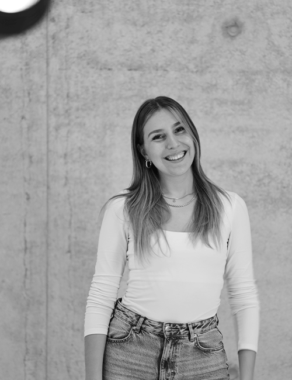

WELCOME TO MY :) PORTFOLIO

Information Design // Branding // Digital Artist // Commmunication Design //
In this project on "Mental Health," we designed visuals for events at the fictional venue "Triptyque," including posters, a banner, and a flyer-poster featuring handwritten quotes and our own photography. By printing, crumpling, and re-digitizing these images, we symbolized the resilience and fragmentation of mental health experiences.
see more Details >>
Course:
communication design
Poster // Flyer // Social Media
3. Semester
Storyframing is a creative method that seamlessly combines storytelling and wireframing,
designed to breathe new life into the user experience of a website through the redesign
process. For this project, I undertook a comprehensive examination of the usability and user
experience of the old website, delving deep into user feedback and analytics to identify
pain points and areas for improvement. My analysis revealed not only the critical flaws in
navigation and content presentation but also illuminated opportunities to enhance user
engagement and satisfaction.
To bring my vision to life, I illustrated a series of placeholder images, carefully selected
to reflect the intended aesthetic and thematic elements of the redesigned website. These
visuals were strategically inserted into the prototype, creating a cohesive and inviting
look and feel that guided the user’s journey. Ultimately, I implemented the clickable
prototype using Adobe XD, which allowed for interactive testing and validation of design
concepts, ensuring that the final product would resonate with users and meet their needs
effectively.
see more Details >>
Course:
Storyframing
Wireframing // Digital Painting // Prototyping
4. Semester
For the functional Norwegian brand Fjelltur, my task was to create a color palette that
resonates with the essence of the brand. To achieve this, I decided to draw inspiration from
the breathtaking landscapes of Norway, carefully selecting colors that reflect its natural
beauty. I sifted through a collection of stunning photographs and discovered remarkable
color combinations that encapsulated the serene yet vibrant essence of the Norwegian
outdoors.
These carefully chosen hues were intended to be integrated into a product design, for which
I selected a hiking backpack that embodies both functionality and style. The design aimed
not only to provide practical solutions for outdoor enthusiasts but also to evoke a sense of
connection to nature with every use. By incorporating these colors, I envisioned a product
that not only serves its purpose but also tells a story of adventure and exploration,
encouraging users to embrace the great outdoors with confidence and flair.
see more Details >>
Course:
Image composition
Color Palette // Product Design
2. Semester
In this photography course, the final assignment required us to create five portrait images,
allowing us the freedom to choose our own theme. I chose to photograph my grandmother,
capturing her in various poses and settings within the comfort of her home.
The narrative followed her as she explored an old photo album, reminiscing nostalgically
over images from her wedding day. This intimate moment revealed not just her memories but
also the rich history woven into those photographs. To enhance the visual storytelling, I
meticulously edited the images using Lightroom and Photoshop, ensuring that the colors and
contrasts reflected the warmth of her memories. The final result was a heartfelt tribute to
her past, encapsulating a beautiful blend of emotion and artistry that transcended the mere
act of photography.
see more Details >>
Course:
Portrait Photography
Image Editing // digital camera
6. Semester
In this typography and layout course, we were tasked with selecting a typeface and creating
a typography poster that showcased our design skills. I embarked on this project by
developing several layouts, each embodying different approaches and design philosophies. One
concept was bold and striking, featuring expansive areas of black space, while another
embraced a playful, minimalist style that celebrated the beauty of simplicity. Additionally,
I explored a dynamic color scheme that brought the typography to life.
The poster was designed to include not only the complete alphabet but also various special
characters and font weights, providing a comprehensive overview of the typeface. To further
enrich the design, I incorporated intriguing sentences that delved into the history and
evolution of the font, highlighting its significance in the world of design. Ultimately,
this project allowed me to experiment with creativity and form, deepening my appreciation
for the art of typography.
see more Details >>
Course:
Typography & Layout
Poster // Layout // Composition
3. Semester
In this project, the task was to recreate a series of still lifes, some of which I photographed myself. Using Procreate, I reinterpreted these still lifes in an abstract style, capturing their essence with bold strokes and unique shapes.
Each image transformed into a study of color and form, pushing the boundaries of realism into abstraction.
After completing the drawings, I designed striking posters for each piece, emphasizing contrasting elements to make each artwork stand out. Every poster became its own visual story, highlighting the interplay of light, shadow, and composition in unexpected ways.
see more Details >>
Course:
Digital Painting
Procreate Drawings // Poster
6. Semester